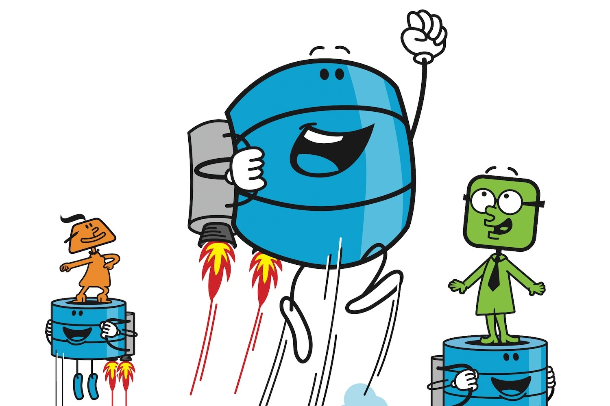

spatialists.ch – geospatial news
About
Subscribe
Follow
Contribute
Best practices for Cloud-Optimized GeoTIFFs
Cloud-Optimized #GeoTIFFs (#COG-s) have revolutionized the way large geospatial raster datasets are accessed and processed. From GeoStandards comes Best Practices Guide for this #cloudnativegeo format.
18.03.2025 22:01
David Oesch

Open data at a glance
#ASIT has published an #opendata guide for #geodata. The guide covers the essentials and strikes a very nice balance with respect to covering the topic in enough depth to be valuable, while not being trivial and also not covering every tiny detail.…
17.03.2025 22:18
Ralph Straumann
EMBAG/LMETA does not make open geodata
The #EMBAG or #LMETA, a Swiss federal law enacted at the start of 2024 mandates #OpenData. But there seems to be a confusion about its effects on geoinformation.
15.03.2025 18:04
Ralph Straumann
Google and Esri collaboration in 3D
#Google and #Esri have agreed on a collaboration that will bring photorealistic #3D data from Google Maps into the #ArcGIS ecosystem, starting in fall.
13.03.2025 07:10
Ralph Straumann
Going forward, maps for AI
Here’s a big geospatial #AI wager: #Niantic, maker of AR game Pokémon Go among others, has announced that Scopely will acquire its game business and that Niantic will be spinning out a new geospatial #AI company, Niantic Spatial Inc.
13.03.2025 06:40
Ralph Straumann
Central nodes* in geospatial
Few weeks ago,
Brian Monheiser
has issued this call on LinkedIn: Who are the top 10 living geospatial thought leaders whose insights you prioritize, whose talks you never miss, and whose writings you…
11.03.2025 15:07
Ralph Straumann
25 years Shuttle Radar Topography Mission
It’s the 25
th
anniversary of the Shuttle Radar Topography Mission (SRTM)! This mission revolutionized Earth observation by creating the first near-global high-resolution digital elevation model. A look back on this fantastic achievement.
08.03.2025 17:52
Ralph Straumann
Tool tip: Navigating the maze of coordinate reference systems
Many people struggle with coordinate reference systems (#CRSs). Who can blame them? But there is a tool that can help you out if you find yourself experiencing the same predicament.
06.03.2025 07:44
Ralph Straumann
cloudnativegeo: Approachable
There is considerable technical writing around #cloudnativegeo data formats. For a more accessible introduction, check out the ‘Optimizing Geospatial for the Cloud’ zine by #DevelopmentSeed which uses storytelling to break down technical barriers.
04.03.2025 19:57
Ralph Straumann
Office for Geoinformation Canton Thurgau on LinkedIn
Starting today, the Office for #Geoinformation of the Canton of #Thurgau has a #LinkedIn account. This made me wonder, how many other cantonal geoinformation offices have a similar presence.
03.03.2025 21:08
Ralph Straumann
GeoParquet to come to Esri ArcGIS Pro
#cloudnativegeo and #GeoParquet news: Chris Holmes shares that the status of a petition for GeoParquet support in #Esri #ArcGIS Pro has changed to “In product plan”.
01.03.2025 19:07
Ralph Straumann
Toponyms
Weekend diversion: Mapmakers (or their financers) got to name a lot of places. There’s a website and a Mastodon account that makes it its purpose to surface the sometimes odd and sometimes funny toponyms …
01.03.2025 16:25
Ralph Straumann
Normalize choropleths
Much (but – judging from experience – not yet enough) metaphorical ink has been spilled on this cartographic topic: Which kind of metrics lend themselves to be mapped using …
26.02.2025 18:51
Ralph Straumann
Geospatial tech radar by Element 84
So-called ‘Tech Radars’, popularized by ThoughtWorks in 2010, have become essential tools for organizations to assess and communicate emerging technology trends. From Element 84 comes a particular interesting one for geospatial technologies.
24.02.2025 07:05
Stephan Heuel
geodienste.ch: STAC API and OGC API Features
With its newest release, #KGK/#CGC offers an OGC #STAC API as well as #OGC API Features for data on geodienste.ch, in accordance with #eCH-0056. Assets seem limited to XTF files, though.
21.02.2025 22:42
Ralph Straumann
Python
uv
#uv is a relatively new #Python project management tool that has been gaining attention for its ease-of-use and speed. It has quickly become a popular choice for easy installation and environment and dependency management in Python projects.
20.02.2025 19:52
Ralph Straumann
Cloud-native web app: A case study
From Stephan Heuel comes a very interesting case study that explores the possibilies of web apps based on the ‘cloud-native geo’ paradigm, the Swiss Rooftop Explorer.
20.02.2025 17:48
Ralph Straumann
Just out: SGS Action Plan 2025
The SGS board has just published the Action Plan 2025 for the Swiss Geoinformation Strategy.
17.02.2025 19:56
Ralph Straumann
The missing dimension: Why geospatial needs to prioritize time
Time for change: Will Cadell argues geospatial tools must shift from static maps to dynamic 3D/4D platforms, prioritizing time-driven insights over location alone.
16.02.2025 21:54
David Oesch
GeoParquet 2.0
Exciting news from the #cloudnative and #cloudnativegeo world: GEOMETRY and GEOGRAPHY become native data types in both #Parquet and #Iceberg.
13.02.2025 22:24
Ralph Straumann
The format that shall not be named
… for I am not interested in the Shapefile Wars and I do not want to wake up the geospatial format zealots. But: By now, a cultural history of the Shapefile, the world’s foremost geospatial data format
1
since the early 1990s (!), would be…
13.02.2025 06:28
Ralph Straumann
The impact of flooding-induced road disruptions on emergency services accessibility
Quite a mouthful, that title:
“Road network disruptions during extreme flooding events and their impact on the access to emergency medical services: A spatiotemporal vulnerability analysis”
. From a Swiss-Austrian team comes this interesting…
11.02.2025 18:21
Ralph Straumann
Prix Carto 2025
The Swiss Society of Cartography (Schweizerische Gesellschaft für Kartografie, SGK) is set to host the prestigious bi-annual Prix Carto awards during its autumn meeting in 2025. This event celebrates innovative and outstanding cartographic products…
10.02.2025 19:51
Ralph Straumann
Topodiscs: Custom 3D-printed Swiss landscapes
A new (currently, beta) service from Stephan Heuel, https://topoprint.ch offers an innovative way to interact with Switzerland’s topography. By combining high-resolution Swisstopo datasets with 3D printing technology, users can create detailed…
08.02.2025 19:51
Ralph Straumann
Look at USGS LiDAR data online
At https://usgs.entwine.io you can peruse more than 2,000 USGS 3D Elevation Program (3DEP) LiDAR datasets that have been made available through the AWS Public Dataset Program. The data amounts to 70,409,082,675,345 LiDAR points at the time of…
08.02.2025 19:10
Ralph Straumann
Small sat high-res imagery
The commodification of high-resolution optical satellite imagery continues. In the domain of small satellites, ONGLAISAT of the Tokyo-based company ArkEdge Space developed in collaboration with the Taiwan Space Agency TASA has achieved a spatial…
08.02.2025 12:47
Ralph Straumann
Hello world
This is the first post. Hello world!
04.02.2025 23:01
Ralph Straumann
No matching items